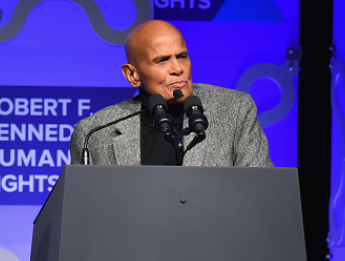
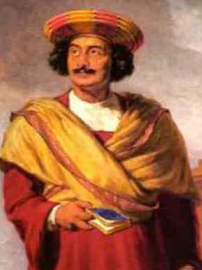
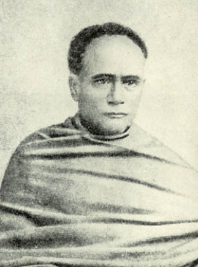
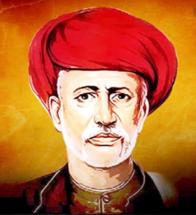
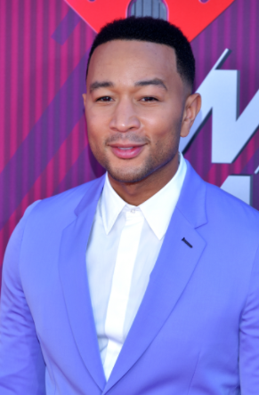
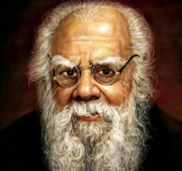

He is a singer. He became an advisor to the organizers of the Women's March led against Trump
He is also an activist for actively participating for the equality of women.

Raja Ram Mohan Roy
He is the one who banned the Sati system.He also started the Brahmo Samaj through which he stood
for the poor like the dalits and for women.

Ishwar Chandra Vidyasagar
He was an Educator who established schools for women. He always wanted to modernise the society
and therefore he became a great reformer.

Benedict Cumbercatch
He was very critical of how much women were being paid compared to men. He said he wouldn't take part
in a movie if women are not being paid equally.
Jyotirao Phule
at the time, when women were not allowed to read and write, he taught his wife (Savitri Bai phule) to
read and write. He with his wife also led campaigns aiming for equality.

John Legend
Being a singer, he did a great job in making the music video of his song 'You and I' which was made
in collaborating with the campaign '#OperationGirl' which was led by organisations for women empowerment.

Justin Trudeau
He is the prime minister of Canada. As soon as he was made the prime minister, 50% of his cabinet
was occupied by women. He also established a feminist foreign aid policy in 2018 which aims in bringing
more funds to the education for girls and also for women's economic empowerment.
E.V Ramaswamy Naicker
When he found the self-respect movement, he believed and made it sure that women should have equal
rights for the family property, they should have all the rights to choose their desired occupation

Dr. BR Ambedkar
Along with his fight in favour of the dalits and the lower caste people, his aim was also to provide
education for women. In his childhood, he saw that his sister wasn't allowed to study, instead she
was married. But as she had a lot of interest in learning he used to give her his books in everybody's
absence.
"We shall see better days soon and our progress will be greatly accelerated if male education is persuaded side by side with
female education." - He said
Dipesh Tank
On hearing about the Nirbhaya case, he was ashamed of belonging to the community of men. And therefore,
he founded an organisation called WARR (War Against Railway Rowdies) which aims in bringing down all these